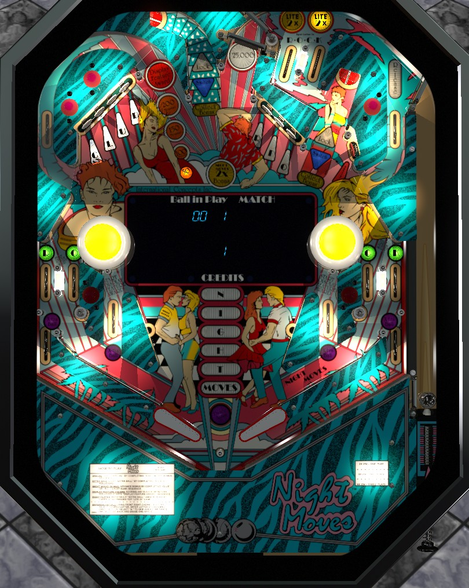

If the ball goes through a Rock side lane or in lane, a Display Feature is started; these are quite valuable, so try to shoot the upper left loop immediately after to score them. Completing the Club or Rio target banks advances bonus. 2-ball multiball can be played by locking a ball at one saucer, then shooting the upper right loop when it is lit for Release, but there are no multiball-specific scoring features, so continue trying to complete target banks, earn Display Features, and shoot the spinner.
The below picture of Night Moves' playfield was taken from the VPX recreation by Kiwi.

A plunged ball can end up in the Lite 2x top lanes, or come down the Release lane and exit the upper right loop. When a ball is being plunged, the Release lane and right pop bumper score 0 points and the Release lane is never lit, so you can't short plunge into multiball if a lock has been made. The top lanes score 10,000 points when lit, or 3,000 when unlit, and exactly one top lane is always lit. Making a lit top lane lights 2x Bonus for the rest of that ball and spots one letter in Rock on the lower side lanes. Which top lane is lit alternates automatically every few seconds, but you can press and hold the right flipper button to freeze the lit top lane in its current position. The top lanes have the same rule on the plunge as they do on the rest of the ball.
When the ball goes through either in lane (beneath the pop bumpers) or any of the Rock lanes on the lower sides, a Display Feature is started. A mystery award will be shown on the alphanumeric display in the playfield, and you must shoot the upper left loop to earn the shown award. You only have about 5 seconds to do this, and the Display Feature is cancelled if other switches such as saucers, standup targets, or pop bumpers are hit first. Possible Display Feature awards include:
If a Display Feature is not running, the upper left loop awards the lit value. This value is 50,000 points by default. If a Display Award was started but not collected, this loop value will be set to 200,000 points, then decrease 50,000 at a time every few seconds. Collecting any upper left loop value always resets the value back to 50,000.
If no ball is locked, one of the game's two saucers will be randomly lit for a lock. Shoot the saucer to lock a ball and plunge a second one. When one ball is locked, the other saucer will be lit for Switch, which locks a ball at that saucer and kicks out the first ball, effectively switching which saucer contains the locked ball. To start multiball, shoot the upper right loop when Release is lit. Whether or not Release is lit alternates each time a pop bumper or slingshot is scored. It is never lit when a ball is in the shooter lane, so you can't short plunge into multiball.
There are no multiball-specific scoring features. Use multiball to shoot the spinner, the upper left loop, or standup targets. As always, if a ball goes through a Rock lane or in lane, try to collect the ensuing Display Feature at the upper left loop.
The left bank of standup targets spells Club, and the right bank spells Rio. At first, all targets in each bank are flashing. Hit a flashing target to score 10,000 points and light it solidly. When you've hit all but one target in a bank, one light will move back and forth across the bank, and you have to time your shot to the lit target to complete the bank. The lit target also scores 10,000 points. Solidly lit targets during the first phase or unlit targets during the rotating phase score 1,000. Completing Club or Rio awards one bonus advance, which is shown by the N-I-G-H-T-MOVES sequence in the center of the playfield. Each letter is worth 50,000 points in base bonus. Earning any letter lights one of the two saucers at random for a bonus collect. Earning the maximum 6 bonus advances to fully spell Night Moves lights the upper right standup target for a Special.
The spinner at the entrance to the upper right loop scores 5,000 points per spin when not lit. Going through either in lane lights the spinner for 25,000 per spin briefly. This is good value, and should be shot for if the upper left loop is unviable for any reason, but the in lane that lights the spinner also lights a Display Feature, which is usually (but not always) better.
Above each out lane on the edges of the table are two lanes on each side. The two left lanes have the letters R-O, and the two right lanes have C-K. These lanes score 3,000 points, or 10,000 when lit. Make a lit lane to unlight it. Making a lit 2x top lane spots one Rock letter for you. Flipper lane change is available on the right flipper only to rotate which Rock lanes are lit. Going through a Rock lane, whether it is lit or not, starts a Display Feature. Spelling Rock by unlighting all 4 lanes lights an extra ball.
A ball that goes through any Rock lane has a chance to either fall into the out lane along the edge of the table or be directed back to the flippers. Use the small posts at the very edge of the playfield to try to nudge the ball back into play when possible.
Extra ball can be lit at either of the out lanes under the Rock lanes, or at either of the in lanes under the pop bumpers. Only one extra ball can be lit at a time. When it is lit, its position rotates by either pressing the right flipper button or spinning the spinner. Out lanes score 50,000 points. In lanes score 3,000 points, start a Display Feature, and briefly light the spinner.
Each completion of a Club or Rio target bank as described above awards one N-I-G-H-T-MOVES letter. Each letter scores 50,000 points in base bonus. Bonus is doubled by making a lit 2x top lane or by earning the Light 2x Bonus Lamp from Display Feature. Bonus can be collected mid-ball by shooting a saucer lit for Collect Bonus after earning the Club or Rio targets, or by earning Collect Bonus Times 4x from Display Feature. In the latter case, the 4x from Display Feature compounds with the normal 2x if it has been earned, making this Display Feature effectively an 8x bonus collect worth up to 2,400,000 points. Maxing out the base bonus at 300,000 points lights the upper right standup target for a Special. There is no way to carry base bonus or multipliers from ball to ball.
In competition/novelty play, Specials and extra balls score 500,000 points.